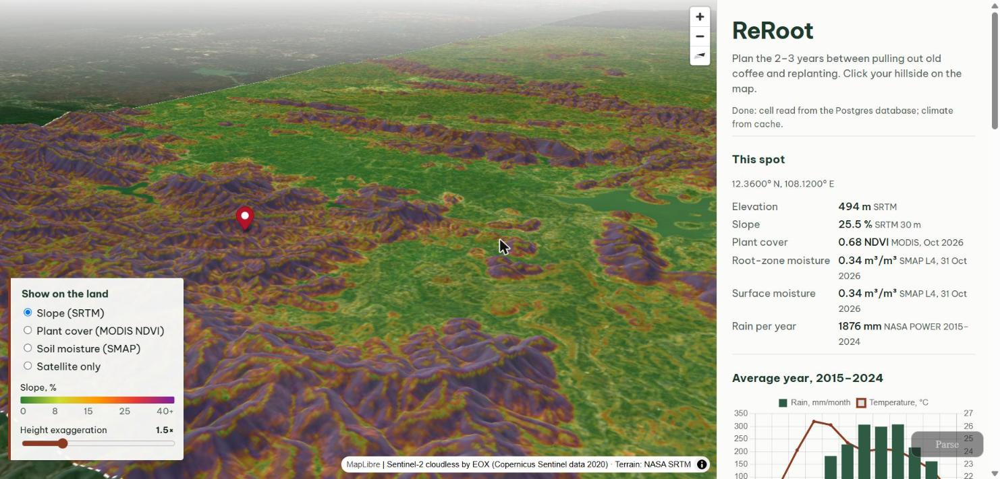
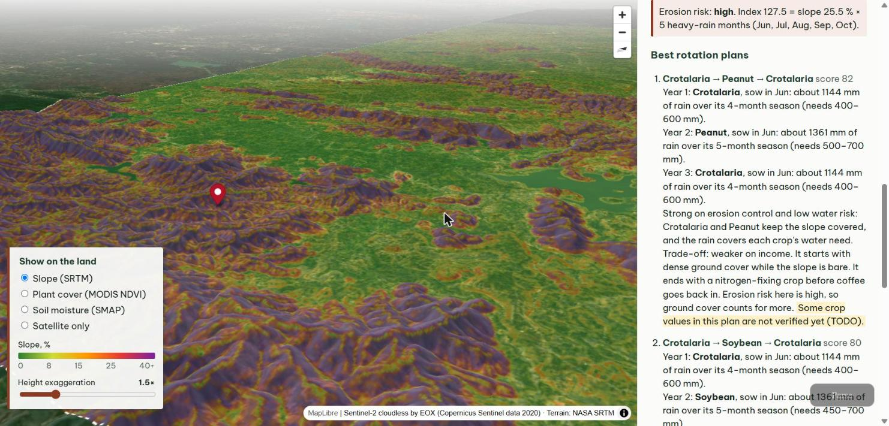
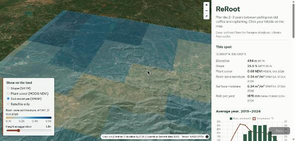
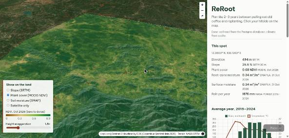

Plan the years between old coffee and new coffee, with NASA data.
Team: [TEAM NAME]
Members: [MEMBER NAMES]
NASA Space Apps Challenge 2026
Challenge: Field Shift: Adapting Farms with NASA Data
coffee-pied-eight.vercel.app
Coffee trees in Vietnam's Central Highlands are ageing. Farmers are advised to grow other crops for 2–3 years before replanting, so the soil can recover. Most farms are on slopes.
Average monthly rain at our demo farm, NASA POWER 2015–2024. Brown months have 200 mm or more, when bare soil washes away.
Every number shows its source. Unverified crop values are flagged.

| Data | What ReRoot uses it for |
|---|---|
| SRTM 30 m | 3D terrain, slope, erosion risk |
| SMAP L4 | Root-zone and surface soil moisture (9 km) |
| MODIS NDVI | Plant cover that protects the soil (250 m) |
| NASA POWER | 10 years of monthly rain, temperature, root-zone wetness |
| Sentinel-2 | Partner (ESA): cloud-free base image |


Example: 25.5 % slope, 5 heavy-rain months → Crotalaria → Peanut → Crotalaria. Gentle land with income first → Peanut leads.
Next: verify crop values locally, add SMAP and NDVI time series and IMERG extreme rain, cover all coffee provinces, Vietnamese language.
Try it: coffee-pied-eight.vercel.app